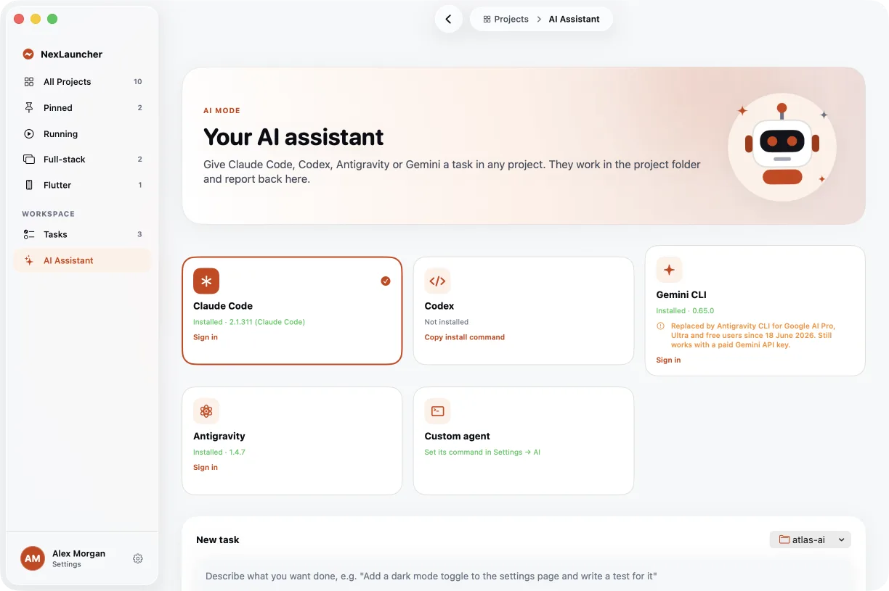
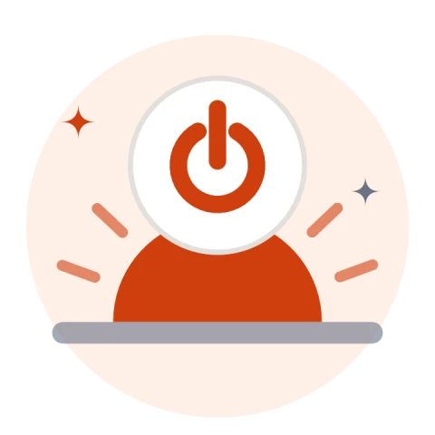

How NexLauncher works
From installing it to handing a task to an agent, here is what happens behind each button.


Install
- Download the zip and open it. Move NexLauncher.app to your Applications folder.
- Open it. NexLauncher isn't notarised by Apple yet, so macOS says it can't check it. Click Done.
- Open System Settings → Privacy & Security, scroll to the bottom and click Open Anyway next to NexLauncher, then confirm with your password or Touch ID.
You only do this once. If you prefer Terminal, this does the same:
xattr -dr com.apple.quarantine /Applications/NexLauncher.appNexLauncher needs macOS 26 or later. It's free, and you can read and build every line of it from source.

It finds your projects
The welcome tour asks where your projects live. NexLauncher scans that folder a few levels deep and looks at the files inside each one, not its name. A folder with a frontend and a backend side by side becomes one full-stack project; a folder that only holds other apps becomes a collection.
JavaScript and TypeScript
Uses the package manager your lockfile names.
Python
Picks the right server for the framework it finds.
Mobile
Runs on the simulator, emulator or device you choose.
Everything else
Compiled languages, other frameworks and plain tooling.
If a guess is wrong, change the command or port for that project in Settings → Projects.

Press Run
Each project offers only the actions that apply: Frontend, Backend, Both, Flutter, Docker or Run.
- Missing dependencies? NexLauncher asks first, then installs them with the project's own tool and shows the progress.
- Logs and ports. Output streams into the Logs tab. NexLauncher picks up the port a server listens on, so you can open it in your browser from the menu bar or the ready notification.
- Stopping is clean. Every service runs in its own process group, so Stop ends the server and everything it started.
- Quitting with something still running asks whether to stop it or keep it going from the menu bar.


AI agents
NexLauncher doesn't run a model of its own. It starts the command-line agent you already use, in the project's folder, and shows what it does as it works. Replies to Claude Code continue the same session; other agents get the earlier exchange along with your reply.
Your task is passed to the agent as an environment variable, never pasted into the command, so quotes or symbols in it can't run anything. You choose how much the agent may do:
| Agent | Plan only | Edit files | Full auto |
|---|---|---|---|
| Claude Code | --permission-mode plan | --permission-mode acceptEdits | --dangerously-skip-permissions |
| Codex | --sandbox read-only | --full-auto | --dangerously-bypass-approvals-and-sandbox |
| Antigravity | --mode plan | --mode accept-edits | --dangerously-skip-permissions |
| Gemini CLI | default approvals | --approval-mode auto_edit | --yolo |
Any other agent works through Settings → AI → Custom agent: give its command and use $NEX_TASK where the task goes. Signing in happens in each agent's own tool, opened in a terminal tab.


Git, terminal and the menu bar
- Git tab: set your name and email, stage files, commit, pull, push, create and switch branches, and read the history. It runs the git you have installed, with your Keychain or SSH credentials, and never force-pushes.
- Terminal: a real zsh in any project or folder, so editors and interactive tools work.
- Menu bar and ⌃⌥⌘L: running services, pinned projects and open tasks, with Run and Stop.
- Widgets: Running Services, Quick Launch and Tasks for your desktop.

What stays on your Mac
Everything. NexLauncher keeps its settings and tasks in ~/Library/Application Support/NexLauncher and doesn't send anything anywhere. It stores no passwords, tokens or API keys: git and each AI agent keep their own sign-in.
This website counts downloads and, if you ask for update emails, stores your address. Nothing else.
Ready to try it?
Free for macOS 26. Takes a minute to set up.